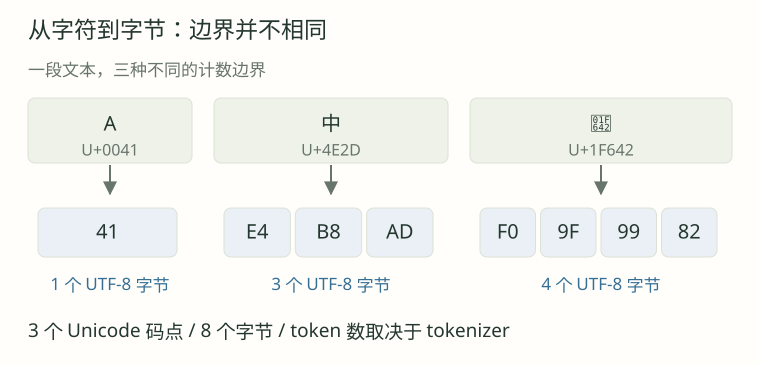

课程目录/ 原理精讲 / 基础知识 / 词元化
Tokenization 基础
文本如何变成模型输入
本课要点与先修
- 给定一个小词表，亲手完成文本的编码与解码。
- 分清 token 编号、Unicode 码点与 UTF-8 字节，而不是把它们都叫“编码”。
- 解释字符级与字节级方案的取舍，并说明子词方法为什么有必要。
先修：会读列表与字典。
本页目录
为什么需要 Tokenization？
模型处理数值张量。Tokenizer 先把文本切成 token，再映射为整数编号。
这些编号作为 Embedding 表的索引，查得向量后送入 Transformer。
原始文本A中🙂
→切分后的单位A | 中 | 🙂
→词表编号[1, 2, 3]
→Embedding 查表向量序列
以下使用自定义字符词表，不是 GPT 的真实编号。
Token、token id、tokenizer，各指什么？
Token 是切分单位；token id 是词表索引；tokenizer 负责文本与编号之间的转换。
一个 token 可以是子词、码点、字节或特殊标记，未必对应一个完整单词或汉字。
编号并不等于意义
中 → 2 只是查表约定，编号大小不表示语义大小。Tokenizer 与模型必须使用同一套词表。
Embedding 表形状为 V×d：V 是词表大小，d 是向量维度。T 个编号查表后得到 T×d 的向量序列。
从字符级 Tokenization 开始
本课先采用字符级方案：每个 Unicode 码点对应一个 token。
第一步：建立词表
收集语料中的不同码点并固定编号，另预留 <UNK> 表示未知字符。
| Token id | 词表单位 | 说明 |
|---|
| 0 | <UNK> | 未知字符标记，是一个特殊单位 |
| 1 | A | 大写字母 |
| 2 | 中 | 汉字 |
| 3 | 🙂 | 单个码点的符号 |
| 4 | e | 小写字母 |
| 5 | U+0301 | 组合尖重音，常附在前一个字母上 |
| 6 | 空格 U+0020 | 空白也是文本的一部分 |
| 7 | ! | 标点 |
词表一旦确定，编码时不临时改号或新增条目。
第二步：逐个查表，完成编码
输入 A中 A!，按码点拆成 A、中、空格、A、!，依次查表：
A 中 空格 A !
↓ ↓ ↓ ↓ ↓
1 2 6 1 7
encode("A中 A!") = [1, 2, 6, 1, 7]
第三步：反向查表，完成解码
解码按编号反向查表，再拼接字符，得到 A中 A!。
decode([1, 2, 6, 1, 7]) = "A中 A!"
decode(encode(text)) == text # 什么时候成立？
所有码点都在词表中，且预处理没有丢失信息时，可以恢复原文，这叫往返一致。
字符编码实现
vocab = ["<UNK>", "A", "中", "🙂", "e", "\u0301", " ", "!"]
char_to_id = {char: i for i, char in enumerate(vocab) if i != 0}
def encode(text):
return [char_to_id.get(char, 0) for char in text]
def decode(ids):
return "".join(vocab[i] for i in ids)
print(encode("A中 A!"))
print(decode([1, 2, 6, 1, 7]))
.get(char, 0) 将查不到的字符映射到未知编号 0。
字符级方案的局限性
问题一：词表外字符会丢信息
A猫 和 A狗 都编码为 [1,0]；解码只能得到 A<UNK>。
"A猫" → [1, 0] → "A<UNK>"
"A狗" → [1, 0] → "A<UNK>"
两个不同输入，变成了同一个结果。
这是多对一映射造成的信息丢失。扩大词表或采用字节回退可以改善覆盖。
问题二：单位太细，会让序列变长
learning 按码点切分需要 8 个 token，常见子词合并后可能更短。
序列越长，计算和存储通常越多；固定上下文窗口能容纳的文字也越少。
问题三：“字符”本身并没有想象中简单
屏幕上的一个“字符”也未必只有一个码点，例如组合重音和组合表情。
Unicode 是什么？
Unicode 为字符分配标准码点（code point），例如 A 是 U+0041，中是 U+4E2D。
| 显示内容 | Unicode 码点 | 十进制值 | 本课 token id |
|---|
| A | U+0041 | 65 | 1 |
| 中 | U+4E2D | 20013 | 2 |
| 🙂 | U+1F642 | 128578 | 3 |
U+ 后是十六进制。“中”的公共码点值为 20013，教学 token id 为 2，两者用途不同。
为什么不直接把码点当作模型编号？
直接用整个码点空间索引 Embedding 会保留大量未用位置，而且仍有字符粒度带来的长序列问题。
看起来一个字，不一定只有一个码点
下面两种写法看起来相近，码点序列却不同：
é → U+00E9 → 1 个码点
é → U+0065 + U+0301 → 2 个码点
e 组合尖重音
e 后加 U+0301 组合重音，通常被感知为一个字素簇，但包含两个码点。
NFC 规范化可统一这对等价表示。本课不自动规范化，以便比较原始码点与字节。
Python 的长度和 JavaScript 的长度为何不同？
len("A中🙂")
"A中🙂".length
Array.from("A中🙂").length
🙂 在 JavaScript 中占两个 UTF-16 码元，因此 .length 为 2；Array.from 按码点迭代，得到 1。
每次说“长度”，都补上单位码点数、字素簇数、UTF-16 码元数、字节数和 token 数应分别计算。
UTF-8：码点怎样变成字节？
UTF-8 将 Unicode 标量值编码为字节。每个字节有 8 位，值为 0～255。
图解 · 字符、码点和字节的边界

A、中、🙂 分别占1、3、4字节：码点边界与字节边界不同。
一个标量值占 1～4 字节；ASCII 保持单字节。代理项 U+D800～U+DFFF 不属于标量值。
| 标量值范围 | 字节数 | UTF-8 位模式 |
|---|
| U+0000～U+007F | 1 | 0xxxxxxx |
| U+0080～U+07FF | 2 | 110xxxxx 10xxxxxx |
| U+0800～U+FFFF（排除代理项） | 3 | 1110xxxx 10xxxxxx 10xxxxxx |
| U+10000～U+10FFFF | 4 | 11110xxx 10xxxxxx 10xxxxxx 10xxxxxx |
x 表示码点有效位；后续字节以 10 开头。合法 UTF-8 还需满足范围与最短编码约束。
展开 UTF-8 位编码推演
先算 A：一个字节就够
A = U+0041 = 65，对应二进制 01000001，即单字节 41。
再算中：把码点填进三字节模板
“中”是 U+4E2D。将其二进制按 4、6、6 位分组，填入三字节模板：
码点 U+4E2D： 0100 1110 0010 1101
分成 4 + 6 + 6 位：0100 | 111000 | 101101
三字节模板： 1110xxxx 10xxxxxx 10xxxxxx
填入有效位： 11100100 10111000 10101101
转为十六进制： E4 B8 AD
得到 E4 B8 AD；去掉结构前缀再拼接有效位，可还原 U+4E2D。
最后看 🙂：需要四个字节
U+1F642 的有效位（补齐到 21 位）：
000 | 011111 | 011001 | 000010
填入模板：11110xxx 10xxxxxx 10xxxxxx 10xxxxxx
得到字节：11110000 10011111 10011001 10000010
十六进制： F0 9F 99 82
将三个字符的字节连接起来：
文本： A 中 🙂
UTF-8： 41 | E4 B8 AD | F0 9F 99 82
总字节数： 1 + 3 + 4 = 8
同一批字节用十进制表示为 [65,228,184,173,240,159,153,130]。
代码验证
text = "A中🙂"
payload = text.encode("utf-8")
print(len(text))
print(len(payload))
print(payload.hex(" "))
print(payload.decode("utf-8"))
encode("utf-8") 使用标准字符编码，不查询前面的教学词表，因此“猫”也能编码。
纯字节与子词的取舍
纯字节 tokenizer 把每个字节当作基础 token，只需 256 个基础值即可覆盖合法 Unicode 文本。
对 A中🙂，字节值作为 ID 时得到 8 个 token；拼接字节后可恢复原文。
代价：同一段文字，需要更多位置
这段文本只有 3 个码点，却有 8 个字节。常见汉字多占 3 字节，部分扩展字符占 4 字节。
在每字节一个 token 的方案中，中中中中 需要 12 个位置；本课字符词表只需 4 个。
纯字节方案覆盖广，但通常产生更长序列，这是覆盖与效率的取舍。
一个字节 token 不一定能单独显示成文字
E4 只是“中”的首字节，单独按 UTF-8 解码会失败或显示替代符。
bytes([0xE4]).decode("utf-8")
bytes([0xE4, 0xB8, 0xAD]).decode("utf-8")
应先拼接完整字节再解码；流式处理用增量解码器暂存未完整的字符。
子词方法试图取得怎样的平衡？
子词方案将常见片段合成较大 token，不常见片段再拆小。例如 learn | ing 是一种手工示意。
字节级 BPE 从字节出发学习常见合并，兼顾基础覆盖与序列压缩。下一课介绍训练和编码。
| 方案 | 基础单位 | 主要收益 | 主要取舍 |
|---|
| 字符级（本课） | Unicode 码点 | 直观、便于手算 | 固定字符词表有覆盖边界；常见片段仍可能很长 |
| 纯字节级 | UTF-8 字节 | 256 个基础值覆盖合法 Unicode 文本 | 单位细，序列可能更长；单字节不一定独立可解码 |
| 子词级 | 学到的文字或字节片段 | 常见片段可用较少 token 表示 | 词表变大；需训练与保存切分规则；覆盖取决于具体设计 |
三个目标，不必总能同时做到最好比较方案时，一起看词表大小、序列长度和文本覆盖。
同一段文字，三种表示
输入 A中🙂 对照三种表示，再输入“猫”观察未知字符。
保留空格与换行，最多输入 120 个码点。
—Unicode 码点
—UTF-8 字节
—JS UTF-16 码元
① 码点：公共标准里的编号
② 字符词表：本课的模型输入编号
教学词表：0=<UNK>，1=A，2=中，3=🙂，4=e，5=U+0301，6=空格，7=!。
- 字符 token ids
- 按字符词表解码
- 词表外字符
③ UTF-8：文件与字节级表示
- 十六进制字节序列
- 以字节值直接作 id 的教学序列
- 拼回全部字节后解码
孤立代理项会被浏览器替换为 U+FFFD；配套 Python 严格模式会报错。
练习
自测与解析 · 7 题
先作答，再展开解析。
01 · 三个数字，分别属于哪套系统？
本课中“中”的 token id 是 2，Unicode 码点的十进制值是 20013，UTF-8 是 E4 B8 AD。它们为什么可以同时成立？编号 2 能否与 A 的编号 1 作语义大小比较？
展开逐步解析
2 是教学词表中的条目索引；20013 是公共标准中的 U+4E2D；E4 B8 AD 是按 UTF-8 规则存储该标量值的三个字节。词表编号可由我们重新指定，但公共码点与既定 UTF-8 映射不能随意改变。编号大小不代表语义大小，向量表示才是后续模型学习的对象。
02 · 手动编码与解码
使用上面的固定词表，写出 中 A! 的编号序列；再解码 [3, 6, 2, 1]。注意空格。
展开逐步解析
第一串按顺序是中、空格、A、!，依次查表为 2、6、1、7，所以是 [2, 6, 1, 7]。第二串依次恢复为 🙂、空格、中、A，拼成 🙂 中A。空格占一个位置，不能直接删去。
03 · 为什么无法恢复未知字符？
编码 A猫! 后得到什么？为什么不能根据编号序列确定“猫”这个字？如果扩充模型参数量，能保证恢复吗？
展开逐步解析
A 是 1，猫不在词表所以是 0，! 是 7，得到 [1, 0, 7]；解码为 A<UNK>!。狗、树等未知字符也会给出相同序列，映射已经多对一。模型可能根据上下文猜测，但不可能仅凭这串编号保证恢复原字。修复要从表示或覆盖策略入手。
04 · 不写代码，算出字节数
A中🙂! 有几个码点、几个 UTF-8 字节？使用本课字符词表有几个 token？如果采用每字节一个 token 的方案呢？
展开逐步解析
四个码点。UTF-8 中 A 占 1 字节，中占 3，🙂 占 4，! 占 1，总共 1 + 3 + 4 + 1 = 9 字节。本课字符词表有 4 个 token，纯字节教学方案有 9 个 token。这不说明任意实际 GPT tokenizer 必定输出 4 或 9 个。
05 · 看起来相同，为什么计数不同？
预组字符 é 和分解形式 e + U+0301 分别占几个码点、几个 UTF-8 字节？为什么看起来相近却不应默认当成同一串数据？
展开逐步解析
预组形式 U+00E9 在双字节范围，占 1 码点、2 字节（C3 A9）。分解形式由 U+0065 与 U+0301 组成，占 2 码点，分别为 1 和 2 字节，总计 3 字节（65 CC 81）。规范化可以统一这对等价表示，但本课没有自动执行；原始码点和字节序列确实不同。
06 · 字节覆盖足够广，为何还要子词？
在一个最多 12 token 的假想窗口中，用本课字符方案和纯字节方案分别能放下多少个“中”？这能说明哪种方案一定更好吗？
展开逐步解析
忽略所有特殊 token 时，字符方案每个中占 1 个位置，可放 12 个；字节方案每个中占 3 个位置，可放 4 个。这显示了序列长度差异，但字符方案还有词表覆盖边界；子词方案则会受到词表及语料影响。不能从一个例子推出绝对优劣。合适的比较应在具体语料和预算上进行。
07 · 一半字符能单独解码吗？
“中”对应 E4 B8 AD。如果流式生成只收到 E4，就立即按 UTF-8 解码，为什么可能出现错误？正确的处理思路是什么？
展开逐步解析
E4 是一个三字节 UTF-8 序列的开头，后面还缺 B8 AD；它本身不是完整字符。应保留未完成字节，等待后续字节后组合解码，或使用增量 UTF-8 解码器。不应把每个字节 token 先独立转成文字再拼接替代符。
小结
码点表示标准字符位置；UTF-8 表示存储字节；token id 表示指定词表的索引。
- Tokenization 是表示选择。 决定单位、切分与查表规则，编号与模型要匹配。
- 字符级方案容易验证。 覆盖内可逆，UNK 会丢信息；码点不等于视觉上的一个字符。
- UTF-8 提供通用字节表示。 合法标量值占 1～4 字节，文本字节数不等于 token 数。
- 子词方法关心覆盖与效率。 在基础单位之上学习常用片段，用更短序列表达常见文本。
本地实验实验
配套脚本仅使用 Python 标准库。打开仓库根目录的终端，运行：
python3 labs/02-tokenization-basics/01-character-and-utf8.py
python3 labs/02-tokenization-basics/01-character-and-utf8.py --text 'A猫'
python3 -m unittest discover -s tests -p 'test_tokenization_basics*.py'
默认脚本会输出 A中🙂、组合重音、A猫 和空字符串。先预测结果再运行，尤其检查字符解码与 UTF-8 解码是否都能恢复原文。查看或保存实验脚本 · 实验说明
参考资料
所有字符 token id、手工子词切分与窗口例子均为教学示例，不代表真实 GPT tokenizer 输出。准确切分需使用指定模型对应的 tokenizer，后续专节再讨论。